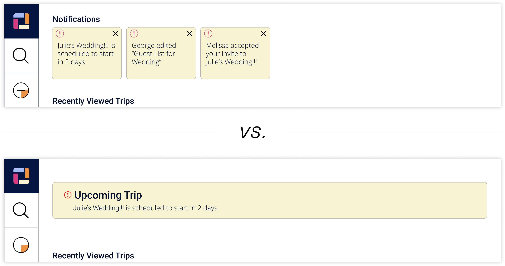

CARGO
Case Study
CARGO gives travelers a platform where they can store, organize, and access their files. Photos, plans, and notes can all be created or uploaded with this cloud storage site.

Deliverables
User Research
Branding & Identity
Hi-fi Mockups
Working Prototype
Tools
Figma
Invision
problem.
Many cloud storage site users are frustrated by the difficulty of organizing their files. Users feel the current organization options aren’t accessible enough.
solution.
User files are stored in trips. Users also have the ability to add tags to their files, which lets them customize their organization. Users will be able to access files by opening a trip or directly searching by title or tag.
Jump to section
research.
Survey Results

88% of users said they used cloud storage for personal reasons, like storing family photos.

75% mentioned that organization was a major frustration with their current services.
Competitive Analysis
I completed a SWOT of Google Drive, Dropbox, and Evernote to better understand the cloud storage market and come up with an idea where my project might fit in. Instead of building an all-in-one site like Google Drive, I learned that it would benefit us more if our site targets a niche.
View Competitive Analysis
Personas
I created some personas to showcase the common issues users face with current cloud storage services. Throughout the design process, I referenced my personas to make sure my final project would solve those problems.
View Personas
Lucas
28, Los Angeles
Software Developer
"I want to share experiences with my family and friends that we can talk about for a long time."
Sarah
20, Minneapolis
College Student
"I waste too much time looking for my notes when I should be studying."
information architecture.
User Stories
Next, I created some user stories, based on features that users said they used on cloud storage sites in my survey. To prioritize, I ranked the more common answers as high priority. I ended up with four high priority stories.
| I want to make an account | High |
| I want to create a new trip | High |
| I want to view a picture | High |
| I want to search through my content | High |
User Flows
I created user flows for high priority stories. The user flows were laid out in a way that allows the user to take multiple directions to arrive at the end goal. Creating these gave me a lot of insight into how I could organize the site.

View User Flows
Wireframes
Next, I did some testing with basic wireframes. I gave each user 3 basic tasks: sign in to an account, upload pictures, and tag a note. These 3 tasks all use different features of the navigation, so I was able to understand how effective the site worked as a whole. In this stage, I was able to identify the issues in my wireframes. I addressed these issues while building mockups for the site.
View Wireframes
branding.
Logo
I tried different names for the site, and different logos for each name. After settling on the name “CARGO”, I brought my favorite sketches into Figma to see how each one would look when polished.
I chose the logo that uses a box shape (similar to a cargo container) as the “O”, because it looks simple, friendly, and strong. I chose the font Roboto Bold because it looks simple and clean, and fit the width of the mark, making it look more like an “O”.
Moodboard
I wanted this moodboard to communicate excitement, adventure, and simplicity.
Pulling from the moodboard, I was able to create a color scheme for the logo and site. Each color represents something different about the brand. Red = Excitement, Blue = Trust, Orange = Friendly, and Yellow= Happy.
Icons
I wanted the icons to look fun, while still being clear to the user what each one means. I created the note and tag icon, and downloaded the rest from flaticon.com.
I added a touch of orange (the main brand color) to each icon, except search. I wanted the search icon to remain clear to all users.
Style Guide
In the style guide, I included the final logo in color, black, and white versions. I also provided the color palette, icons, copy fonts and sizes, and instructions showing how it should all be used.
View Style Guide
testing.
Preference Testing
The most notable change from the preference tests was the notification banner on the user home page. I wasn’t sure how to design a notification bar for this site. So, I tested two ideas. The results were split, and I realized that neither one would fix user issues.
I decided to go back to the drawing board and ended up creating a welcome banner for users with a notification bar below it. This new design looks clean and provides the user with helpful information.

Usability Testing
I asked some questions about the user’s thoughts on the site, and gave them three tasks to complete. The tasks were: make an account, upload an image, and tag a note. Most of these tests went smoothly, and I was able to get valuable information about how well the brand conveys its message to users.
Final Changes
I edited some of the UI elements to avoid distracting the user. Some of my final changes were:
-
fixing the upcoming trip notification
-
organizing all navigation to the left side of the screen
-
consolidating the search function to an icon and a screen overlay
-
using icons on the cards so users can quickly identify what they’re looking at
I’m happy with this end product, as it solves problems users commonly face and reflects the core ideas of the brand image.

conclusion.
CARGO was built from research and refined by user testing. I’m thankful for all the ideas that didn’t work out, because they taught me valuable lessons. I experienced the full design process of a project, from research to finished product. I learned that, as a designer, I should never assume I know what the users want.
In the future, with a full scope of the project in mind, I will be able to create better research questions and tests to help me arrive at a polished final design that will address the user’s needs.